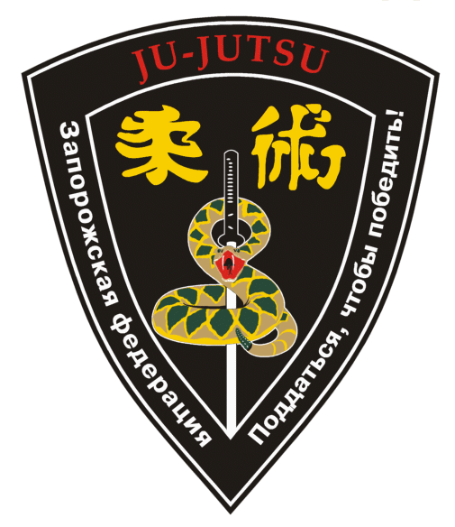

Эмблема
Наша Федерация / ЭмблемаЭмблема федерации - это треугольник с выпуклыми сторонами. В нём на чёрном фоне изображены иероглифы "Дзю-Дзюцу" , надписи "Ju-Jutsu", "Поддаться, чтобы победить", название федерации и змея, обвившаяся вокруг самурайского меча.
Каждая деталь эмблемы имеет своё значение. Надписи "Дзю-Дзюцу" на английском и японском языках в особой расшифровке не нуждаются.
Дзю-Дзюцу - это искусство воинов Японии - самураев. Поэтому на эмблеме присутствует самурайский меч - символ воинской чести, хранитель души воина.
Змея - символ гибкости, хитрости, ума, скрытой силы. Эти качества точно описывают тактику дзю-дзюцу: следование за противником, гибкость, уходы от атаки, утончённую технику. Тот же самый принцип провозглашает надпись "Поддаться, чтобы победить"
Заслужить право носить эмблему федерации непросто. Кандидат должен выдержать испытание силы духа и тела: он должен выполнить нормативы по физической подготовке, знать основы истории, филослфии и техники дзю-дзюцу.